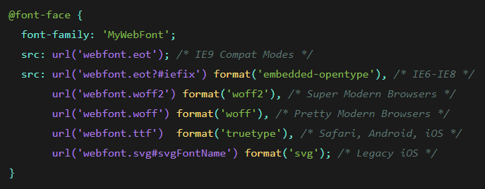

As vezes queremos usar uma fonte que não está instalada na máquina do usuário. Então eu posso criar uma família de fonte personalizada e usar meios de passar o arquivo da fonte junto com a página html.
Funciona da seguinte forma. Usamos a propriedade no css chamada:
Arquivos de fonts costumam ter formatos diferentes, EOT, WOFF, TTF, SVG, etc. Pra isso, podemos passar mais de uma fonte como parâmetro. Só que para que o navegador precise baixar todas as fontes, para então descobrir qual dos formatos ele reconhece, podemos passar as urls das fontes e junto " format('formato da fonte') "
Dessa forma o navegador já vai direto no formato, se ele reconhecer, já baixa o arquivo de fonte correto e mostra na tela bonitinho.
